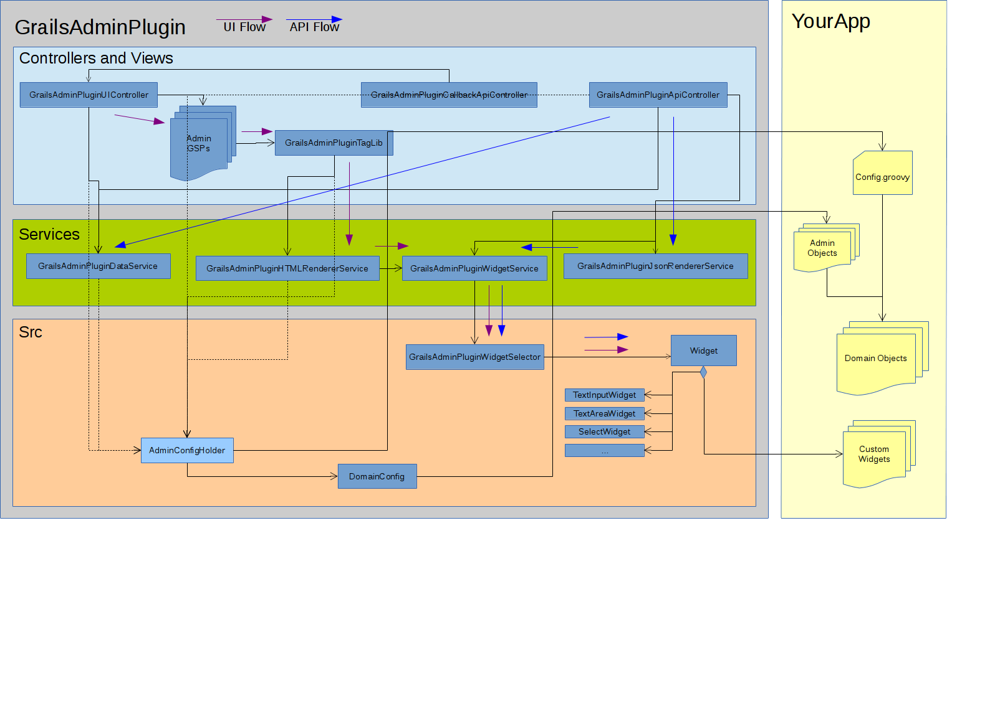

Grails Admin - Reference Documentation
Authors: Kaleidos Open Source
Version: 0.1
Table of Contents
1 Introduction
The Grails Admin plugin provides and easy and secure backend to administer out-of-the-box your Grails applications. Absolute functional from scratch, gives much more power with his extensible widget system.1.1 Release history and changelog
- 9th May 2014
- 0.1: First internal release
- 23rd May 2014
- 0.6: First ready for world testing release
1.2 Contributors
1.3 Dependencies
This plugin doesn't import any plugin but needs that your application have installed the following dependencies:- Spring Security Core v1.X or v2.X for authorization/authentication:
1.4 Installation
To install you should include in your BuildConfig.groovyplugins {
runtime ":admin:0.1" // Remember, there are some plugin dependencies
// Spring Security v1.X , example:
compile ":spring-security-core:1.2.7.3"
// … or v2.X , example:
compile ":spring-security-core:2.0-RC3"
}2 Plugin Structure
The Grails plugin integrates seamlessly with your application3 Plugin Configuration
The power of the grails admin plugin is that you can create a full-fleshed grails administration page only by configuration.In order to be flexible enough the plugin provides several configuration for tunning your application.3.1 Global Configuration
Admin access root
A good security practice is not to use a "standard" URI to access your administration backend.Grails-Admin allows you to customize the endpoint so it uses a custom one.By default the value is /admingrails.plugin.admin.access_root = "/admin"Security access role
The default role required for a user to access the admin is "ROLE_ADMIN" but you can customize to use any role defined with your application.grails.plugin.admin.role = "ROLE_ADMIN"Domains List
You have to excplicitely set the domains that your application is going to manage.The property is a list of strings containing the full class name of your domainsBy default it contains an empty list.grails.plugin.admin.role = [ "test.admin.TestDomain", "test.admin.AnotherDomain" ]
3.2 Per Domain Configuration
You can configure the administration screens with a specific DSL that can be configure either in your Config.groovy or in classes of type "Admin" that also allows the redefinition of some methods.Configuration on Config.groovy file
grails.plugin.admin.domain.Test = {
create includes: ["name", "description", "dateCreated", "endDate"],
customWidgets: ["name": "test.MyTestWidget"]
}Configuration on "Admin" entities
package testclass TestAdmin { static options = { create includes: ["name", "description", "dateCreated", "endDate"], customWidgets: ["name": "test.MyTestWidget"] }}
grails.plugin.admin.domain.Test = "test.TestAdmin"Include properties
You can select which properties the administration will display on a specific operation.The order will be preserved in the form.grails.plugin.admin.domain.Test = {
list includes: ["name", "description", "dateCreated", "endDate"]
create includes: ["name", "description"]
edit includes: ["name", "description"]
}Exclude Properties
You can customize which properties will be exluded from the administration screens.grails.plugin.admin.domain.Test = {
list excludes: ["startDate", "endDate"]
create excludes: ["startDate", "endDate"]
edit excludes: ["startDate", "endDate"]
}Custom widgets
For some properties the default editor/renderer may not be enough. You can customize this behaviour writing your own widget. Further documentation on the "widgets" sections.grails.plugin.admin.domain.Test = {
edit customWidgets: ["name": "test.MyTestWidget"]
}4 Tutorial
5 Widgets
A widget is a component of Grails Admin that represents a property from a domain object instance. The widget handles the rendering (HTML or JSON) for that property, and also transform the values received for that property into the correct type (for example, translate from String to Date as needed).5.1 Configure widgets
configureWidgets5.2 Styling widget instances
stylingWidgets5.3 Built in widgets
Grails admin provides a set of built in widgets that should cover the majority of situations.5.3.1 CheckboxInputWidget
Sample of html render<input type="checkbox" checked="checked" name="test"></input>
5.3.2 DateInputWidget
Sample of html render<input name='test' type='date' value='01/01/2000' />
5.3.3 DateTimeInputWidget
Sample of html render<input name='test' type='datetime' value='01/01/2000 00:00' />
5.3.4 EmailInputWidget
Sample of html render<input name='test' type='email' value='example@example.com' />
5.3.5 HiddenInputWidget
Sample of html render<input name='test' type='hidden' value='Some text' />
5.3.6 LabelWidget
<label name="test">Some text</label>5.3.7 NumberInputWidget
Sample of html render<input name='test' type='number' value='0' />
5.3.8 PasswordInputWidget
Sample of html render<input name='test' type='password' value='abc12345' />
5.3.9 SelectMultipleWidget
Sample of html render<select multiple name="test"> <option value="Volvo">Volvo</option> <option value="Saab" selected="selected">Saab</option> <option value="Opel">Opel</option> <option value="Audi" selected="selected">Audi</option> </select>
5.3.10 SelectWidget
Sample of html render<select name="test"> <option value="">--</option> <option value="Volvo">Volvo</option> <option value="Saab" selected="selected">Saab</option> <option value="Opel">Opel</option> <option value="Audi">Audi</option> </select>
5.3.11 TextAreaWidget
<textarea name='test'>Some text</textarea>
5.3.12 TextInputWidget
Sample of html render<input name='test' type='text' value='Some text' />
5.3.13 TimeInputWidget
Sample of html render<input name='test' type='time' value='12:00' />
5.3.14 UrlInputWidget
Sample of html render<input name='test' type='url' value='http://grails.org' />
5.4 Custom widgets
Besides the built in widgets, you can create your own custom widgets.Groovy side
Inherit from Widget
Your custom widget should inherit from the class net.kaleidos.plugins.admin.widget.Widget. That is an abstract class, that has only one methods that you must implement:- String render(): The method to render your widget as html
- String renderBeforeForm(): Render code html before the form that contains all the widgets
- String renderAfterForm(): Render code html after the form that contains all the widgets
- Object getValueForJson(): Returns an object (usually an string) that whould be used in order to represent the current value of the widget when the widget is represented as JSON.
- List<String> getAssets(): Returns the list of assets (css and js) needed for the html representation of this widget. GrailsAdminPlugin uses the convention-over-configuration paradigm, so if you don't implement this method, it will try to load one js file and one css file with the same name that the widget.
- Object value: The current value of the widget. Its type will depend on the actual widget. For example, on a TextInputWidget will be a String, and on a SelectMultipleWidget will be a list.
- Map htmlAttrs: A map of properties to be rendered on the html representation, like the name, if it is required, etc.
- Map internalAttrs: A map of properties internal for the widget. Remember that the widget represents a property of a domain object, so:
- domainObject: This is that domain object. Note that it could be null (for example, on the create screen)
- propertyName: This is the name of that property.
- domainClass: This is the class of that object.
- relatedDomainClass: If the property is a relation with another domain class, this is that domain class. It could be null.
Sample
With all this, lets make a sample Widget. We will create a custom widget that show an addres on a map. It will be used for properties of type String.Create the Widget ClassWe will create our widget on the file src/groovy/sample/MapWidget.groovypackage sampleimport net.kaleidos.plugins.admin.widget.Widgetclass MapWidget extends Widget { @Override String render() { return "" } }
String render() { def html = new StringBuilder() html.append("<div>") html.append("<iframe width='425' height='350' frameborder='0' scrolling='no' marginheight='0' marginwidth='0'") html.append("src='https://maps.google.com/maps?f=q&q=${value}&output=embed'") html.append("></iframe>") html.append("</div>") return html }
String render() { def html = new StringBuilder() html.append("<div>") html.append("<iframe width='425' height='350' frameborder='0' scrolling='no' marginheight='0' marginwidth='0'") html.append("src='https://maps.google.com/maps?f=q&q=${value}&output=embed'") html.append("></iframe>") html.append("</div>") html.append("<input class='form-control' type='text' ") htmlAttrs.each{key, value -> html.append("$key='${value}' ") } html.append("value='${value}' />") return html }
When you write html as this example, there is a risk of an XSS attack (for example, if the value is something like "<script>alert(0)</script>). So, instead of write the value directly, you should write it as value.encodeAsHTML(). Also, you should be carefull with the null values. So you can write rhe values as${value?:value.encodeAsHTML():''}
Frontend side
Most widgets won't need special css nor js. But if you need them, you can use them. GrailsAdminPlugin uses the convention-over-configuration paradigm, so by default it will try to load one js file and one css file with the same name that the widget. The plugin will search for this files on WEB-APP/js/admin/ and WEB-APP/css/admin/.If you need something diferent, you can specify a custom method getAssets on the widget.Sample
We will upgrade our MapWidget with a button that refresh the map with the current address. In order to do so, we will use a js and a css file. For the sake of the sample, we wont use the convention, so we need to override the getAssets method of the pluginList<String> getAssets() {
[ 'js/admin/map.js',
'css/admin/map.css'
]
}String render() { def html = new StringBuilder() html.append("<div class='map-widget'>") html.append("<div>") html.append("<span class='map-container'>") html.append("<iframe width='425' height='350' frameborder='0' scrolling='no' marginheight='0' marginwidth='0'") html.append("src='https://maps.google.com/maps?f=q&q=${value}&output=embed'") html.append("></iframe>") html.append("</span>") html.append("<input type='button' class='map-widget-refresh js-map-widget-refresh' value='Refresh' />") html.append("</div>") html.append("<div>") html.append("<input type='text' class='form-control js-map-widget-text' ") htmlAttrs.each{key, value -> html.append("$key='${value}' ") } html.append("value='${value}' />") html.append("</div>") html.append("</div>") return html }
.map-widget-refresh {
background-color: #4040EA;
border: 0 none;
color: #FFFFFF;
margin-bottom: 10px;
margin-left: 15px;
padding: 5px;
}$(".map-widget").on( "click", ".js-map-widget-refresh", function(event) { var value = $(this).closest(".map-widget").find(".js-map-widget-text").val(); var html = "<iframe width='425' height='350' frameborder='0' scrolling='no' marginheight='0' marginwidth='0'"; html += "src='https://maps.google.com/maps?f=q&q=" + value + "&output=embed'></iframe>"; $(this).closest(".map-widget").find(".map-container").html(html); });
NOTE: GrailsAdminPlugin uses jquery, so it is available for your custom widgets also
6 FAQ
Why should I use this instead of "scaffolding"?
The scaffolding is better as a code-generation tool that "bootstrap" a new application with a base application. The aim of the plugin is to provide a customizable backend to extend the administration.We don't want to override scaffolding but to use this configuration-based alternative.Also, this plugin has some other added features such as:- Integrated with security
- Configurables views
- Integrates easily as a plugin